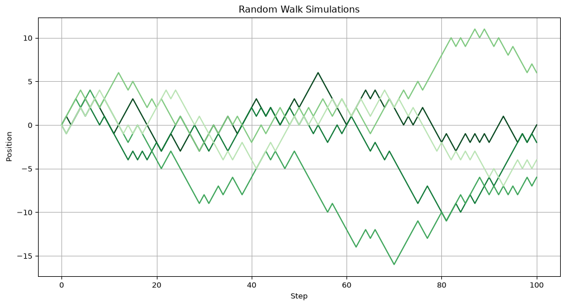
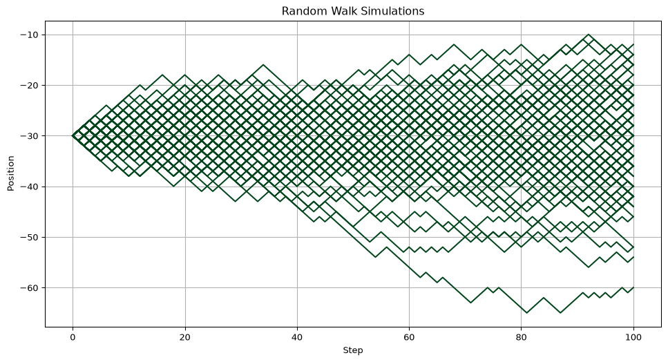
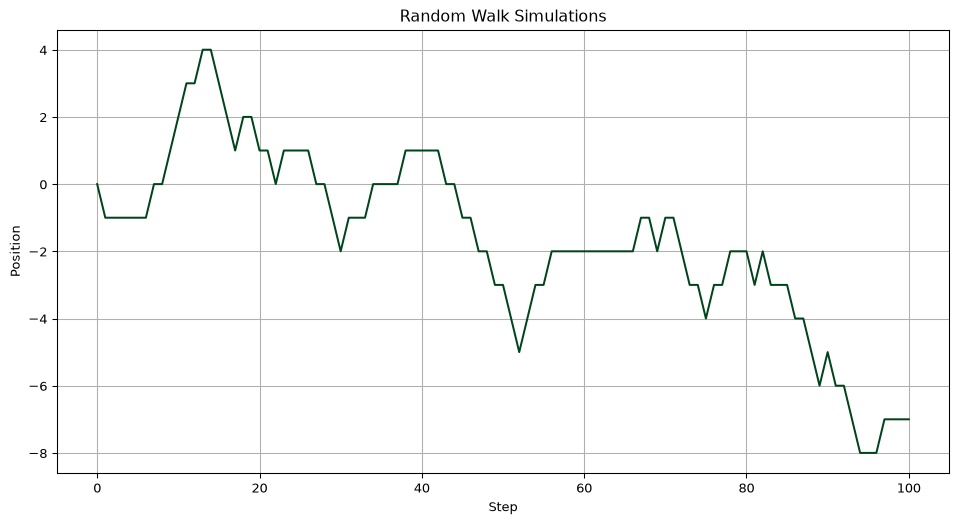
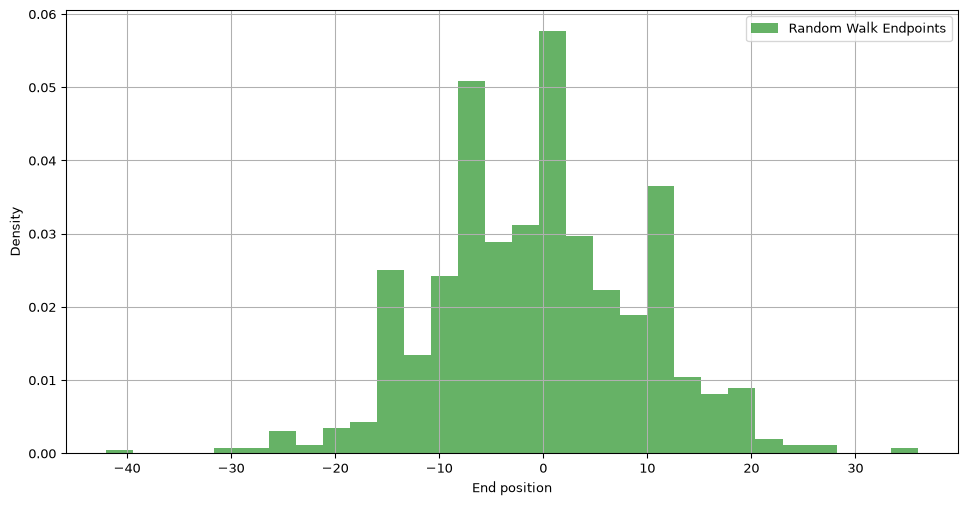
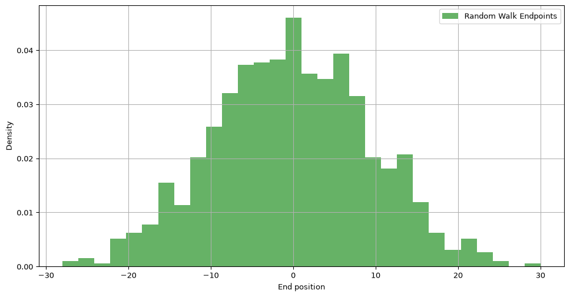
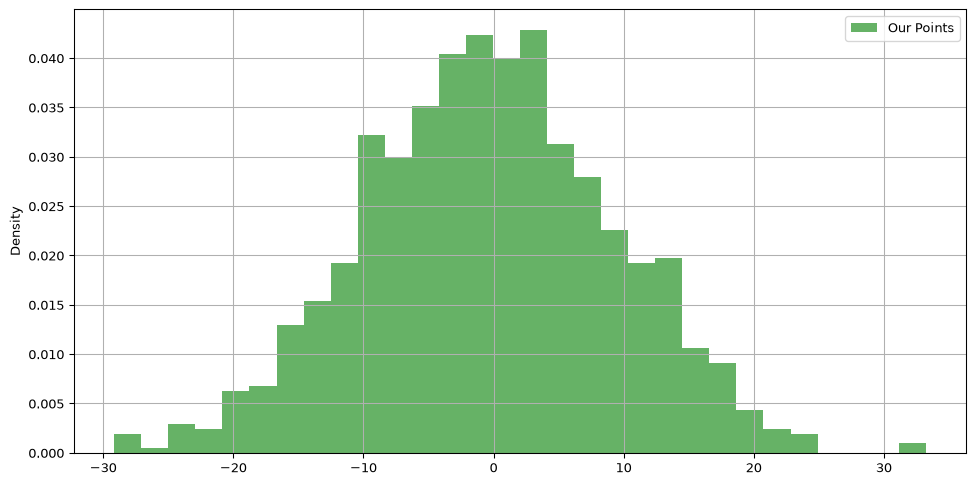
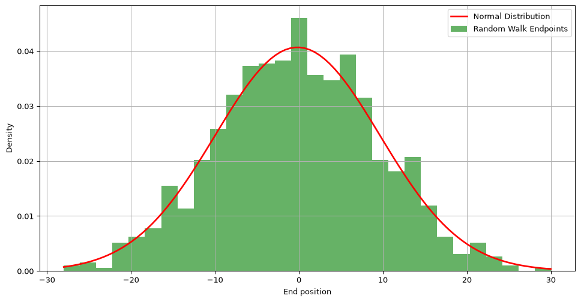

import numpy as np # for numerical operations on arrays
import matplotlib.pyplot as plt # to display images
import matplotlib.cm as cm # to define colormapsStatistics and Simulation with NumPy
Module 3: NumPy
Statistics and Simulation with NumPy
NumPy can summarize observed data and generate random data from a model. We will begin with descriptive statistics, then use simulations to study random walks, hypothesis tests, and Monte Carlo estimation.
Setup
First, let’s import the necessary libraries for our analysis.
To make the examples reproducible, we set a random seed. Running the page again with the same seed produces the same pseudo-random sequence.
np.random.seed(7)Descriptive Statistics
Begin with a small set of measurements whose values we can inspect by hand.
measurements = np.array([12.1, 11.8, 12.5, 12.0, 11.6, 12.4])
print("Mean:", np.mean(measurements))
print("Median:", np.median(measurements))
print("Standard deviation:", np.std(measurements))
print("Minimum and maximum:", np.min(measurements), np.max(measurements))Mean: 12.066666666666668
Median: 12.05
Standard deviation: 0.3144660377352202
Minimum and maximum: 11.6 12.5For a two-dimensional dataset, the axis argument decides whether NumPy summarizes columns or rows. Let’s use the midterm one more time. In Session 17 we joined Madrid and Segovia and computed the points of each of the 10 students in each part of the exam: open problems (out of 40), debugging (out of 30), and multiple choice (out of 30).
part_points = np.array([
[35, 20, 25],
[15, 15, 20],
[40, 25, 25],
[15, 15, 15],
[40, 25, 25],
[20, 15, 15],
[30, 25, 25],
[40, 25, 25],
[5, 10, 10],
[25, 25, 20],
])
print("Mean of each part:", np.mean(part_points, axis=0))
print("Mean of each student:", np.mean(part_points, axis=1))Mean of each part: [26.5 20. 20.5]
Mean of each student: [26.66666667 16.66666667 30. 15. 30. 16.66666667
26.66666667 30. 8.33333333 23.33333333]
Exercise: Shapes of the means
Without running the code, predict the shapes of both mean arrays. Then compute the standard deviation of each part. In which part are the students most different from each other?
Solution
The mean of each part has shape (3,) because reducing axis 0 collapses the ten students and keeps the three part columns. The mean of each student has shape (10,) because reducing axis 1 collapses the parts and keeps the ten student rows.
part_std = np.std(part_points, axis=0)
print(part_std)[11.84271928 5.47722558 5.22015325]The open problems have the largest standard deviation: they separate the students the most. (They are also worth more points, so we would compare the parts on the same scale, for instance in percentages, before drawing strong conclusions.)
Correlation and Covariance
Covariance describes whether two variables tend to vary together. Correlation rescales that relationship to the interval from -1 to 1.
study_hours = np.array([1, 2, 3, 4, 5, 6])
exam_scores = np.array([52, 55, 65, 71, 78, 85])
print("Covariance matrix:\n", np.cov(study_hours, exam_scores))
print("Correlation matrix:\n", np.corrcoef(study_hours, exam_scores))Covariance matrix:
[[ 3.5 24. ]
[ 24. 166.26666667]]
Correlation matrix:
[[1. 0.99488899]
[0.99488899 1. ]]The matrices are symmetric. Their off-diagonal values describe the relationship between the two different variables.
Exercise: Do the Parts Agree?
Using part_points, compute the correlation between the points in the open problems and the points in the multiple-choice part. Do students who do well in one part also tend to do well in the other?
Solution
open_points = part_points[:, 0]
mc_points = part_points[:, 2]
print(np.corrcoef(open_points, mc_points))[[1. 0.91797568]
[0.91797568 1. ]]The off-diagonal value is close to 1, so in this group the two parts are strongly and positively correlated. With only 10 students, this is an observation about our class, not a general rule.
A Simulation-Based Hypothesis Test
Suppose a coin produces 62 heads in 100 flips. If the coin were fair, how often would a result at least this far from 50 occur?
n_simulations = 10_000
simulated_heads = np.random.binomial(100, 0.5, size=n_simulations)
distance_from_fifty = np.abs(simulated_heads - 50)
observed_distance = abs(62 - 50)
p_value = np.mean(distance_from_fifty >= observed_distance)
print("Estimated two-sided p-value:", p_value)Estimated two-sided p-value: 0.0226This p-value is a simulated probability under the fair-coin model. It is not the probability that the hypothesis itself is true.
# YOU CAN SKIP THIS CELL
# The following auxiliary function will help us plot the series we will generate
# during this class
def plot_series(
ls_ser: list[np.ndarray],
xlabel: str = None,
ylabel: str = None,
title: str = None):
"""
Plot a series of line plots using matplotlib.
Parameters
----------
ls_ser : List[np.ndarray]
List of numpy arrays to be plotted.
xlabel : str, optional
Label for the x-axis.
ylabel : str, optional
Label for the y-axis.
title : str, optional
Title of the plot.
Returns
-------
None
This function only plots the series and does not return any value.
"""
# Convert a single numpy array to a list of arrays for consistency
if isinstance(ls_ser, np.ndarray):
ls_ser = [ls_ser]
# Generating colors from the 'Greens' colormap, starting with a strong green
colors = cm.Greens(np.linspace(1, 0.3, len(ls_ser)))
# Creating the plot
plt.figure(figsize=(12, 6))
for i, ser in enumerate(ls_ser):
plt.plot(ser, color=colors[i]) # Plot each series in a different shade of green
# Setting labels and title
plt.xlabel(xlabel if xlabel else "Index")
plt.ylabel(ylabel)
plt.title(title)
plt.grid(True)
plt.show()Random Walk Simulation
A random walk is a process where each step is determined randomly. It’s a simple yet powerful concept used in various domains, including finance. Let’s simulate a random walk using NumPy.
For our example, we can image someone walking forward, but tumbling randomly to the left (-1) or right (+1) in each step they take.
Exercise: Random steps
Generate an array of 10 random steps, stored in a variable ser. Each step can be either -1 or 1.
Solution
# Option A
steps = 10 # Number of steps
# We can use "randint" to generate random numbers (-1, 0, 1)
ser = np.random.randint(-1, 2, size=steps)
# And now we need to remove all the 0's - Use masking here
ser = ser[ser != 0]
# Problem: the resulting array is smaller than our desired size!
# We need to repeat this process until we get 10 values
while len(ser) < steps:
need = steps - len(ser) # How many extra values we need
ser = np.concatenate([ser, np.random.randint(-1, 2, size=need)])
ser = ser[ser != 0]
print(ser)[-1 1 -1 1 -1 1 1 1 -1 -1]# Option B (better)
steps = 10 # Number of steps
# We will use "choice" - Generates a random sample from a given 1-D array
ser = np.random.choice([-1, 1], size=steps)
print(ser)[-1 -1 1 1 -1 -1 -1 1 1 -1]Be careful: choice needs an array-like of options, not a string.
# "choice" does not work with strings
ser = np.random.choice("-1, 1", size=steps)
Exercise: Cumulative steps
Add the steps of ser cumulatively.
For instance, [1, -1, -1, -1, 1] should output [1, 0, -1, -2, -1].
Solution
ser_cumul = np.cumsum(ser)
print(ser_cumul)[-1 -2 -1 0 -1 -2 -3 -2 -1 -2]
Exercise: Start at zero
Add the steps cumulatively, but ensure the walk starts at 0.
For instance, [1, -1, -1, -1, 1] should output [0, 1, 0, -1, -2, -1].
Solution
# Option A
# Initialize an array of zeros, with one element more than the amount of steps
steps = 10
arr = np.zeros(steps + 1)
# Generate the steps
ser = np.random.choice([-1, 1], size=steps)
# Add the steps cumulatively
arr[1:] = np.cumsum(ser)
print(arr) # This is a float! How can we make them integers?[ 0. -1. -2. -1. -2. -1. 0. 1. 2. 1. 0.]To get integers, create the zeros array with dtype=int:
arr = np.zeros(steps + 1, dtype=int)
arr[1:] = np.cumsum(ser)
print(arr)[ 0 -1 -2 -1 -2 -1 0 1 2 1 0]Now we can define a function that simulates a random walk.
def random_walk(steps: int) -> np.ndarray:
"""
Simulate a random walk.
Generates a random walk by randomly selecting steps of -1 or 1 and
cumulatively summing them to create the walk.
Parameters
----------
steps : int
The number of steps in the random walk.
Returns
-------
np.ndarray
An array representing the positions of the random walk at each step.
"""
# Generate an array of random steps (-1 or 1) of size 'steps'
steps_array = np.random.choice([-1, 1], size=steps)
# Add a zero
steps_array = np.insert(steps_array, 0, 0)
# Cumulatively sum the steps to create the random walk and return it
return np.cumsum(steps_array)Lets perform several simulations, store them in a list, and plot them using our auxiliary function plot_list_series.
# Parameters for the random walk
n_simulations = 5
n_steps = 100
# Simulating multiple random walks
ls_sim = []
for _ in range(n_simulations):
ls_sim.append(random_walk(n_steps))
plot_series(ls_sim, xlabel="Step", ylabel="Position", title="Random Walk Simulations")
Exercise: Many walks at once
Improve the random_walk function so that it can generate any number of random walk simulations all at once. Call it random_walks(steps, num), store a hundred walks of 100 steps in arr_sim, and plot them.
Solution
def random_walks(steps: int, num: int=1) -> np.ndarray:
"""
Simulate any number of random walks.
Generates a random walk by randomly selecting steps of -1 or 1 and
cumulatively summing them to create the walk.
Parameters
----------
steps : int
The number of steps in the random walk.
Returns
-------
np.ndarray
An array representing the positions of the random walk at each step.
"""
# Generate an array of random steps (-1 or 1) of size 'steps'
steps_array = np.random.choice([-1, 1], size=(num, steps))
# Add a zero
steps_array = np.insert(steps_array, 0, 0, axis=1)
# Cumulatively sum the steps to create the random walk and return it
ser = np.cumsum(steps_array, axis=1)
if num == 1:
return ser[0]
else:
return ser# Parameters for the random walk
n_simulations = 100
n_steps = 100
# Simulating multiple random walks
arr_sim = random_walks(n_steps, n_simulations)
plot_series(arr_sim.T, xlabel="Step", ylabel="Position", title="Random Walk Simulations")
Exercise: The fifth walker
Using arr_sim, find where the 5th walker ended up after 17 steps.
Solution
# Row 4 is the fifth walker. Column 17 is the position after 17 steps
# because column 0 stores the starting position.
position = arr_sim[4, 17]
print(position)1
Exercise: Move the origin
The walks in arr_sim begin at an origin of 0. Shift them so they start at -30 instead, and plot them.
Solution
# We use NumPy broadcasting
arr_new = arr_sim - 30
plot_series(arr_new.T, xlabel="Step", ylabel="Position", title="Random Walk Simulations")
Exercise: Walking together
Imagine two people taking a random walk independently, but they only move when both agree on the direction:
- Both choose +1, then move +1.
- Both choose -1, then move -1.
- If one chooses +1 and the other -1 (or vice versa), they stay in place.
Simulate 100 steps of this joint walk, starting at 0, and plot it.
Solution
n_steps = 100
# Initialize both random steps
steps1 = np.random.choice([-1, 1], size=n_steps)
steps2 = np.random.choice([-1, 1], size=n_steps)
# Use NumPy masking
# First create a boolean mask indicating when the two steps coincide
mask = (steps1 == steps2)
# Initialize a new steps array of zeros
steps_together = np.zeros(n_steps)
# Use masking to modify this array
steps_together[mask] = steps1[mask]
# Add a first zero (starting position)
steps_together = np.insert(steps_together, 0, 0)
# Cumulative sum
walk = np.cumsum(steps_together)
plot_series(walk, xlabel="Step", ylabel="Position", title="Random Walk Simulations")
Analysis of Random Walk Distribution
After simulating individual random walks, we’ll aggregate the results of multiple simulations to analyze their overall distribution and compare it with a normal distribution.
# YOU CAN SKIP THIS CELL
# The following auxiliary function will help us plot the distribution
def plot_distribution(
ser: list[float],
name: str = "Our Points",
bins: int=30,
xlabel: str = None,
plot_normal: bool=False):
"""
Plot the distribution of a series and optionally overlay a normal distribution.
Parameters
----------
ser : List[float]
The series for which the distribution is to be plotted.
name : str, optional
Name of the series, used in the legend.
bins : int, optional
Number of bins in the distribution, by default 30.
xlabel : str, optional
Label for the x-axis.
plot_normal : bool, optional
Overlay normal distribution, by default False.
Returns
-------
None
This function only plots the distribution and does not return any value.
"""
# Plotting the distribution of the series
plt.figure(figsize=(12, 6))
plt.hist(ser, bins=bins, density=True, alpha=0.6, color='g')
legend = [name]
# Overlaying a normal distribution if mean and std are provided
if plot_normal:
x = np.linspace(min(ser), max(ser), 100)
mean, std = np.mean(ser), np.std(ser)
plt.plot(x, (1/(std * np.sqrt(2 * np.pi)) * np.exp( - (x - mean)**2 / (2 * std**2))), linewidth=2, color='r')
legend = ["Normal Distribution"] + legend
# Setting labels and legend
plt.xlabel(xlabel)
plt.ylabel("Density")
plt.legend(legend)
plt.grid(True)
plt.show()We can reuse our previous code to run 1000 simulations, of 100 steps each. Thanks to Python, this experiments can be done easily! Then, we find what is the last position of each simulation, and plot the distribution of those final positions using our auxiliary function.
# Parameters for aggregating random walks
n_simulations_agg = 1000
n_steps_agg = 100
arr_walks = random_walks(n_steps_agg, n_simulations_agg)
endpoints = arr_walks[:, -1]
plot_distribution(endpoints, name="Random Walk Endpoints", xlabel="End position")
Exercise: Shape of the walks
We did 1000 simulations of 100 steps each, and stored each individual position in arr_walks. Without running any code, what should be the shape of this array?
Solution
print(arr_walks.shape)(1000, 101)There is one row per simulation and one column per position. Each walk has 101 positions because the starting position 0 is included.
Exercise: Final positions
Get the final position of each simulation in arr_walks.
Solution
print(arr_walks[:, -1])[ 14 4 0 8 18 8 -6 -2 10 -14 8 6 -4 0 -8 -2 -12 -12
-24 4 -10 0 -2 -4 -8 10 4 6 12 -10 -14 8 4 2 0 -14
-2 0 -2 26 -12 -4 -10 0 4 -2 4 -4 -8 -12 0 -10 -8 0
-16 -20 -8 -4 -8 2 -8 -2 -8 -12 8 -26 16 14 -8 6 -28 6
4 -10 10 -4 -14 -8 -20 2 0 -8 -6 -8 8 12 2 4 4 -8
0 -12 6 -10 -2 -6 -2 18 -8 -16 4 -6 2 16 -10 -2 -14 -14
-8 2 16 -10 2 8 -16 -4 10 -16 -6 14 -6 -8 8 10 8 -4
0 -14 -12 -16 -2 -16 8 -8 0 -6 4 2 6 -8 4 4 24 -24
-8 12 -16 8 0 2 4 -6 -2 -4 -14 6 0 18 12 -10 -10 16
-42 -14 6 -8 2 20 -2 -18 -10 2 2 -4 -2 -8 -4 6 2 -10
-2 -6 -8 4 -4 0 -4 -6 -6 -2 -18 10 -2 -4 -10 -4 2 -4
-6 10 0 -8 12 -20 4 0 8 -14 -12 6 8 2 16 28 10 0
-4 0 0 14 -8 -8 2 -8 4 12 -18 -16 6 6 -18 2 -2 18
2 14 -2 28 -6 -10 6 18 -8 -12 14 -2 4 0 20 -2 -10 14
-10 20 4 -6 4 -6 22 14 2 10 -14 -8 -12 -12 -2 0 6 22
-14 -6 8 -12 0 -2 4 -6 -4 -4 -10 6 4 8 -10 -10 -12 10
14 -6 6 -6 4 -28 -12 -8 10 0 16 36 16 -14 10 -10 -10 0
16 14 -12 12 -4 2 2 8 -14 4 8 4 -12 -6 0 18 -2 -4
-4 -6 0 -14 14 -4 2 -12 0 -4 -14 -2 10 -12 0 12 -2 0
-4 -14 10 -4 -6 8 -12 14 20 4 16 20 -4 -4 14 16 20 -2
-6 0 8 -10 -10 12 14 -4 8 10 -6 -14 -10 6 4 -10 12 -4
-8 -2 -2 0 -20 4 -8 10 4 -8 6 -4 0 -2 12 -16 -18 0
8 4 -10 0 -8 -4 12 -2 -2 -8 16 -4 12 2 -4 -4 4 -4
14 0 12 16 -6 2 -14 -10 14 -6 6 2 16 8 10 -14 -2 -14
0 -10 -2 -24 0 14 -16 -2 -16 8 -10 -14 -6 0 -22 12 -4 -4
0 16 4 -16 0 12 6 -2 10 4 6 0 -4 -2 -10 2 10 8
-24 -8 -8 -10 4 10 0 2 2 -8 0 -12 -18 -12 2 -8 8 -8
-10 -16 4 -20 -2 -4 12 -4 -2 14 6 -16 -6 0 -8 4 12 -2
2 -24 10 20 -14 -2 -14 6 -16 6 2 4 12 4 -8 -6 -8 2
-20 -8 -14 -2 0 2 0 2 6 -4 -12 -2 -4 -6 -8 -14 -6 10
-8 -16 -4 24 -12 -18 10 -10 -4 0 12 -14 -8 -14 6 -6 0 0
18 20 4 22 14 -20 -10 -8 -2 2 6 -14 4 -4 18 -10 -14 0
4 0 -12 -16 4 -2 4 -10 -8 -12 0 8 12 -2 -6 10 12 -6
-10 2 6 0 -16 -10 4 -20 -18 -2 -6 10 4 12 4 -10 16 -26
6 -4 -18 -2 0 -6 12 12 6 -10 12 -12 10 -10 6 -2 -18 12
-8 -10 6 2 -8 12 2 10 0 -8 -10 -2 -10 -2 -4 -4 -4 -14
10 -2 10 -12 -10 4 -16 -10 -4 8 -2 8 0 -6 6 2 -2 -6
8 8 2 2 -4 -4 -22 4 10 -10 0 16 -8 6 2 0 -10 4
10 -10 -4 -12 -6 18 -10 -4 -16 0 10 16 2 -6 12 -6 8 2
-16 2 6 -8 0 10 -8 6 6 14 -14 8 10 8 4 -4 6 6
-6 -2 -4 6 2 6 10 4 10 -22 -2 -6 4 0 16 16 -4 -6
-8 4 -16 -14 4 -2 -6 -24 -2 2 -20 0 2 6 4 12 14 -12
2 0 -2 4 -6 -6 -4 8 0 18 -12 -2 4 0 -8 -4 -4 -8
2 -16 0 -2 4 -6 0 6 6 -8 2 12 12 -16 20 -2 -4 8
34 2 4 -4 8 -8 -4 -6 -4 -4 -10 6 6 4 12 0 -14 -14
12 12 4 -10 12 10 -30 -2 6 -2 10 4 -8 0 2 0 10 14
-8 -8 6 -2 -2 8 -10 -4 8 8 0 -10 -10 -10 8 0 -16 12
8 14 18 2 10 10 6 -2 -14 -30 -8 -8 6 2 -6 10 4 6
-6 4 24 -2 -8 -12 -6 10 0 -14 10 -8 0 -6 -4 -10 0 12
-2 -10 -2 -8 14 22 -4 0 12 0 4 -4 -2 2 12 4 8 8
8 2 12 2 10 -2 -2 -4 -6 4 -6 -14 10 0 12 -6 6 2
0 6 2 -2 16 10 -10 0 -18 2 -6 12 -8 0 10 4 20 6
4 4 2 -10 -4 6 -2 12 4 -2 -12 -16 4 -10 -6 -4 0 -10
10 10 -4 4 12 6 14 -6 2 -14 -8 -12 8 -2 22 16 -6 -8
-2 0 -4 2 -2 6 8 6 14 18 -2 -12 -6 4 2 4 2 -8
4 -2 8 4 8 -10 -12 14 18 8]
Exercise: Average final position
Compute the average final position over the 1000 simulations.
Solution
# OPTION 1 (bad option, but viable)
arr = arr_walks[:, -1]
mean = 0
for v in arr:
mean = mean + v
print(mean / len(arr))-0.504# OPTION 2 (smart option)
print(np.mean(arr))-0.504The average is close to 0 because steps of -1 and +1 are equally likely.
Let’s go back to the distribution for a second:
# Parameters for aggregating random walks
n_simulations_agg = 1000
n_steps_agg = 100
arr_walks = random_walks(n_steps_agg, n_simulations_agg)
endpoints = arr_walks[:, -1]
plot_distribution(endpoints, name="Random Walk Endpoints", xlabel="End position")
Does this distribution look familiar? It looks like a normal distribution!
To check this, lets generate a normal distribution using NumPy.
# We get the mean and standard deviation of the set of end points
mean = np.mean(endpoints)
std = np.std(endpoints)
# Generate points from a normal distribution using NumPy
ser_norm = np.random.normal(mean, std, size=n_simulations_agg)
# Plot the points
plot_distribution(ser_norm)
They look very similar! To make it more apparent, our auxiliary function plot_distribution provides the keyword plot_normal to overlay the normal distribution over our current histogram.
plot_distribution(endpoints, name="Random Walk Endpoints", xlabel="End position", plot_normal=True)
Challenge: Approximating Pi with Monte Carlo
Consider a square with a circle inside it. We randomly generate points within this square. The image below illustrates this with blue points inside the circle and red points outside.

To estimate the value of \(\pi\), we use the Monte Carlo method. This involves comparing the number of points inside the circle (blue) to the total number of points (blue and red). The formula for approximating \(\pi\) is:
\[\pi \approx 4 \times \frac{\text{number of blue points}}{\text{total number of points}}\]
Write the monte_carlo_pi function to approximate \(\pi\). It should:
- Accept
num_points, the number of random points to create. - Generate random points in a square with corners (-1, -1) and (1, 1).
- Count how many points fall inside the unit circle \(x^2 + y^2 \leq 1\).
- Calculate \(\pi\) following the equation above.
- Return this estimated value of \(\pi\).
Possible solution
def monte_carlo_pi(num_points: int) -> float:
"""Estimate pi using uniformly sampled points in a square."""
points = np.random.uniform(-1, 1, size=(num_points, 2))
squared_distance = points[:, 0] ** 2 + points[:, 1] ** 2
inside_circle = squared_distance <= 1
return 4 * np.mean(inside_circle)
print(monte_carlo_pi(100_000))3.14324The Boolean mean is the proportion of points inside the circle because NumPy treats True as 1 and False as 0 in this calculation.
Summary and Reflection
- Descriptive statistics summarize a dataset;
axiscontrols the direction of a reduction. - Covariance and correlation describe how pairs of variables vary together.
- Random sampling lets us model distributions and repeat experiments.
- A simulation-based p-value measures how unusual an observation is under a stated null model.
- Cumulative sums turn random steps into random walks.
- Monte Carlo methods estimate quantities using repeated random samples.
Explain why estimates from 100,000 simulations are usually more stable than estimates from 100 simulations, while still not being exact.
Homework and Review
Work through the homework exercises available here.